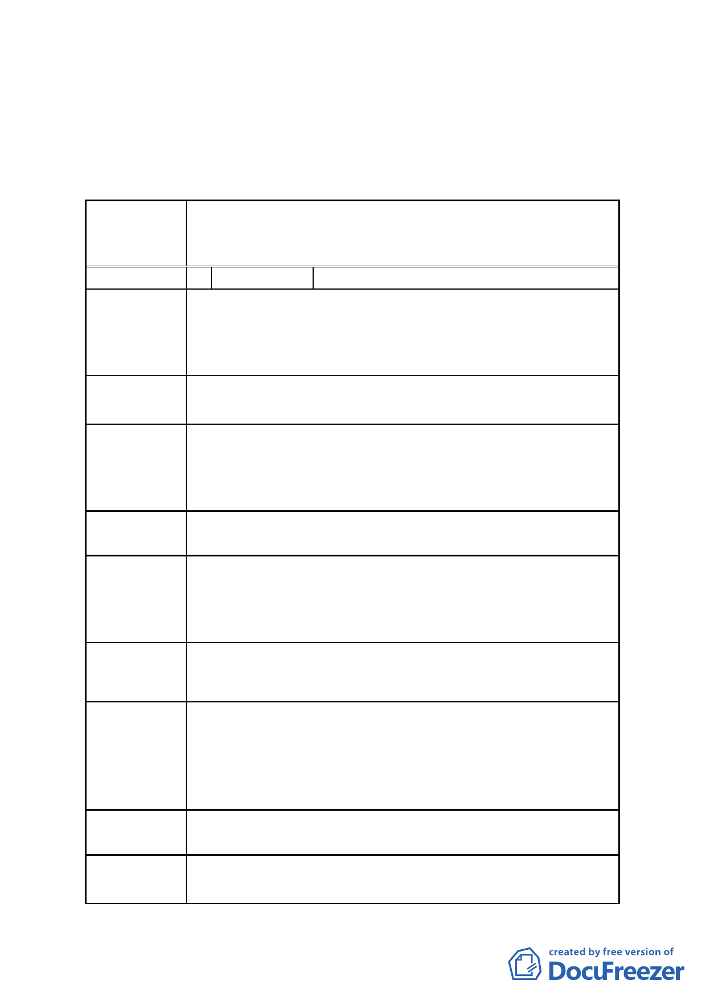

計畫層級審慎訂定之建議，請市府後續辦理都市計畫
變更作業時妥予處理。
臺北市都市計畫委員會 公民或團體所提意見綜理表
案名
變更臺北市內湖區潭美段五小段 21、21-1、22、22-1 地號「辦公服
務區（一）」及同小段 35、35-1 地號「工商服務展售區」為「影視音
產業專用區」細部計畫案
編號
1 陳情人
周玫卉
陳情理由 1
本計畫受限「臺北松山機場飛航管制區禁止、限制建築」規定限制建
築物高度，「表七 變更計畫內容表」容積率提高至 360%，而建蔽率
放寬至 60%，仍有容積未能用盡之疑慮，或因增加地下開挖深度而提
高工程費用。
建議辦法 1 建請建蔽率放寬至 70%。
市府回應
本計畫為促進民間參與臺北市影視音產業園區公共建設之投資開
發，已衡酌影視音產業特性及松山機場航高管制而予以放寬建蔽率及
容積率，可開發規模已較周邊地區高，在維持一定開放空間品質下，
建議不予採納。
委員會決議 依市府回應說明辦理
陳情理由 2
「表九 事業及財務計畫表」之預定完工期程為 104 年，考量本案為
民間自行申請規劃申請之案件，且本案需經都市設計及土地使用開發
許可審議委員會審議通過後始得發照建築，初估預定完工期程應至少
為 106 年。
建議辦法 2 建請修正預定完工期程為 106 年。
市府回應
1.查旨揭表九已附註：「表列預定完成期程，得由主辦單位視實際規
劃需要酌予增減調整」，且開發方式係採「民間自行規申請參與公
共建設」，故完成期程可依後續主辦單位與民間投資人簽訂之投資
契約加以規範。
2.建議無須修正。
委員會決議 依市府回應說明辦理
依據 97.08.05 府都規字第 09733252100 號函公告實施之「變更臺北
陳情理由 3 市『基隆河（中山橋至成美橋段）計畫案（南段地區）』及『內湖區
-9-